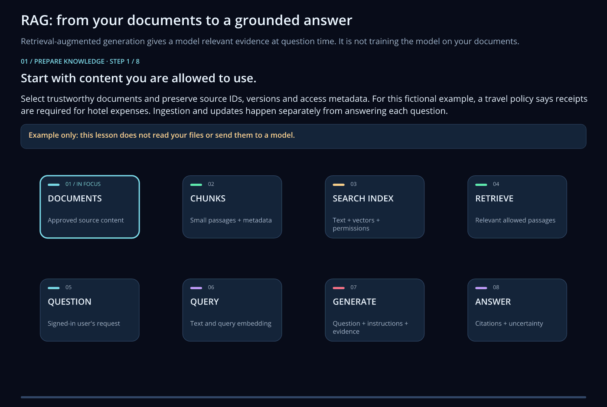

Agent Factory and GenAIOps¶
Agent Factory supplies reusable workload examples for persistent prompt agents, hosted agents, multi-agent patterns, ingestion and RAG. It is not a promise that one setup command deploys every agent framework or application.
Watch RAG step by step¶
Follow approved documents through chunking and indexing, then an authorized question through retrieval to a grounded answer. RAG supplies context at question time; it does not train the answer model on your documents. This configuration-wizard lesson does not read files or call a model.

Animated SVG | GIF | Still image


See also DataOps + RAG and fine-tuning.
Choose a starting point¶
| Example area | Use |
|---|---|
41-single-agent |
Foundry prompt-agent and supported hosted-framework examples. |
42-multi-agent |
A hosted team calling separately persisted knowledge/reviewer agents. |
43-data |
Ingestion and retrieval preparation for the selected target. |
44-azure-mcp |
A narrow, private read-only Azure tool example. |
45-rag-agent |
Explicit source-bound RAG with separate Search and Foundry IQ paths. |
Open the Agent Factory quickstart. Keep project configuration outside generated use-case copies, and select an exact existing target rather than guessing a resource from its name.
Configure infrastructure and workload separately¶
The GenAI infrastructure route can provide Foundry, storage, Key Vault, Search, Cosmos DB, monitoring and hosting components according to the selected design. For standard private agents, review capability-host dependencies together. Creating infrastructure does not automatically ingest data or deploy an agent.
Current model names, versions, SKU and capacity are in Parameters. Do not assume the old GPT-4o table still describes the selected template. Simple presets can also differ from raw shared-template defaults.
RAG and shared data¶
Select the intended source, version and audience, then configure ingestion and grounding. The RAG example preserves source bindings and isolated retrieval copies. It does not imply arbitrary binary extraction or automatic per-user document permissions.
Changing use_common_datalake_storage does not move data or repoint deployed
agents automatically. Reconfigure and verify the affected workload.
Gateways and management interfaces¶
Regular APIM pools, optional Kong edge, dedicated AI Gateway integration and network Application Gateway have different jobs and prerequisites. See gateway parameters.
Factory Agent Chat and Factory MCP are management interfaces, not the same as your workload agent or the narrow private Azure MCP example. Their allowed actions depend on configured identity, scope and approval.
More info
Private RAG example | Private Azure MCP | Monitor and operate
The private Azure MCP example initially permits a narrow resource-read tool surface, not arbitrary shell commands or mutations. Framework/model support, private network reachability and tool permissions must be checked for the chosen deployment. Cloud inference and ingestion are explicit operations with their own costs and permissions.